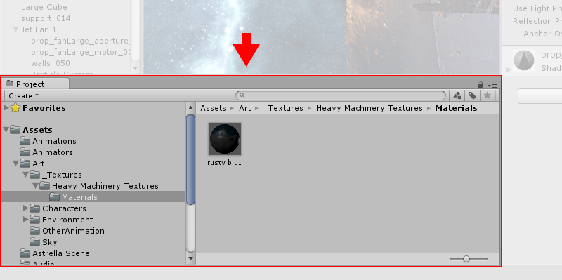
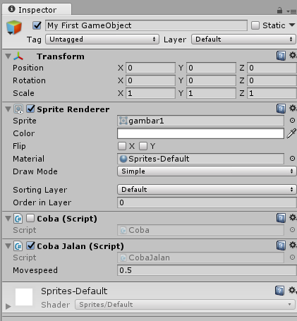

1. Download dan Install Unity
- Download Minimal versi Unity 5.3 atau Unity terbaru di: https://unity3d.com/get-unity/download?ref=personal atau https://store.unity.com/
- Instal Unity yang sudah di download. Jika ditanya tentang standard asset. Instal atau centang juga standar asset Unity.
- Pertama kali instalasi pilih personal edition JANGAN PROFESIONAL.
- Untuk launch unity pertama kali HARUS ONLINE dan akan ditanya juga tentang profil dan email. Isikan terserah dengan email yang BENAR.
- Setelah memasukkan email, maka akan muncul pesan di email untuk validasi.
- Setelah di klik tautan pada email untuk validasi, Unity akan bisa digunakan baik online ataupun OFFLINE.
- Penjelasan untuk UI yang ada pada Unity bisa dilihat di: https://unity3d.com/learn/tutorials/topics/interface-essentials
PRAKTIKUM (DIRUMAH):
Download dan install unity dirumah dengan menggunakan PC/Notebook pribadi!
Membuat Project
Dibeberapa versi unity sebelum 5.6, ketika pertama kali membuka project unity (setelah instalasi unity) diwajibkan untuk online. Daftarkan diri kamu dengan cara sign up dan kemudian tunggu email verifikasi dari unity. Setelah itu, sign in unity dan isi survey. Pilih edisi “personal” untuk versi unity yang gratis. Jika ingin versi unity yang berbayar pilih edisi “profesional”. Setelah itu buat project baru dengan klik tab “NEW” pada sebelah kanan atas. Lalu klik “New Project”. Setelah itu akan muncul gambar seperti dibawah ini:

Project Name berupa nama project Game yang akan dibuat. Location merupakan direktori dimana projek game akan disimpan. Tombol 3D dan 2D merupakan tombol untuk menentukan apakah game yang akan dibuat merupakan game 3D atau 2D. Hal ini akan berpengaruh pada antarmuka unity selanjutnya. Kita dapat menggunakan asset game atau standard asset yang sudah disiapkan oleh Unity yang sebelumnya sudah di install terlebih dulu. Asset packages memungkinkan kita untuk dapat secara bebas menggunakan standard assets Unity. Jika sudah siap dengan persiapan project maka tekan “Create Project”.
PRAKTIKUM:
Buat project game 2D dengan nama “Latihan1_2D” dan simpan pada direktori selain “C:” ! (perhatikan bahwa tidak ada asset package yang dipilih)
KUMPULKAN:
Screenshoot ketika sedang akan membuat project baru dan berada dihalaman “Project”. Beri nama sc_01_01.jpg
Antarmuka Unity
Berikut adalah gambar antarmuka unity yang dibagi kedalam lima bagian utama: Project Window, Scene View, Hierarchy window, Inspector Window, dan Toolbar:
Project Window
Project window memperlihatkan aset-aset game yang masih mentah dimana kita dapat melakukan drag and drop aset game berupa gambar, suara, script, model 3d, dan asset lain. Disamping itu kita juga membuat bisa membuat script,folder, material, dll dengan melakukan klik kanan:

Scene View
Scene view memperbolehkan kita untuk melakukan manipulasi langsung berupa menambahkan objek ke scene game atau mengedit objek. Scene view dapat memperlihatkan scene game dengan sudut pandang 2D atau 3D tergantung project yang sebelumnya sudah dipilih.
Hierarchy Window
Hierarchy window merupakan representasi teks dari game objek yang terdapat pada Scene View. Struktur dari beberapa Game objek dalam satu scene diperlihatkan pada hierarchy window ini. Perhatikan bahwa game object berbeda dengan game asset. Game asset belum berbentuk game objek. Berikut adalah gambar hierarchy window yang memperlihatkan struktur game objek:
Inspector Window
Inspector window akan memperlihatkan property dari setiap game objek yang ada. Untuk melihat property salah satu game objek. Pilih dan tekan salah satu game object di hierarchy window dan lihat propertinya di Inspector Window. Letak inspector window diperlihatkan pada gambar berikut:
Toolbar
Toolbar menyediakan tools untuk menunjang pengembangan game dengan Unity. Berikut adalah gambar dari toolbar:

Game View
Game view letaknya disebelah tab Scene. Jika kita klik play button pada toolbar maka akan diarahkan ke Game View. Game View merupakan tampilan game yang telah dikembangkan. Pastikan ketika mengedit nilai di Inspector sudah dalam posisi Scene tab dan tidak dalam posisi “Play”.
PRAKTIKUM:
Dari game project yang sudah dibuat lakukan hal berikut: 1. Masukan file “gambar1.png” dan drag kedalam Project Window. 2. Klik gambar yang ada di Project Window tersebut dan lihat di Inspector. 3. Screenshot Inspector dan beri nama sc_01_02.jpg 4. Klik gambar tadi yang ada di Project Window dan drag ke Scene View. 5. Klik Play 6. Screenshot keseluruhan editor Unity dan beri nama sc_01_03.jpg
KUMPULKAN:
Kumpulkan sc_01_02.jpg dan sc_01_03.jpg
Permasalahan yang Sering Muncul
- Jika terdapat INCOMPATIBLE maka cari versi Unity yang kompatibel dengan computer atau laptop. Biasanya terkait dengan 32 bit atau 64 bit.
- Jika masih bingung bisa ditanyakan ke :https://unity3d.com/community atau http://stackoverflow.com/
Tools pembuatan Asset Game:
Bitmap Graphics
- Adobe Photoshop
- Corel Painter
- Pixelmator
- GIMP (free)
- Krita (free)
- Pixlr (free)
Vector Graphics
3D Graphics
Digital Sound Editors
- Adobe Audition
- Avid Pro Tools
- Audacity (free)
Music Creation
Game Assets FREE
2D Bitmap and Vector Graphics
3D Graphics
Digital Sound and Music
Menyimpan dan membuka project
Kita akan mencoba untuk melihat lebih dalam tentang pemrograman dasar yang ada pada Unity. Terdapat dua bahasa pemrograman yang dapat digunakan dalam unity yaitu, c# dan javascript. Pada matakuliah ini, hanya bahasa pemrograman c# yang akan diajarkan. Sebelum itu buat project 2D baru bernama “Latihan2_2D”. PASTIKAN layout editor unity adalah “Default”. Untuk merubahnya lihat gambar berikut:
Mekanisme membuka project
Ketika project sudah dibuat maka secara otomatis akan terbentuk beberapa folder seperti: Assets, Library, dan ProjectSettings serta beberapa file solution Microsoft Visual Studio (.sln). Jadi untuk membuka project Unity dilakukan dengan cara klik “open” pada sebelah kanan atas unity sesaat setelah aplikasi unity dibuka.
Pilih folder project unity (dalam kasus ini folder project unity bernama “Latihan2_2D”) seperti gambar berikut:
Untuk versi unity 5.6 keatas, tidak perlu harus membuka unity. Buka project di windows dan cari file dengan ekstensi .scene kemudia double klik pada file .scene tersebut.
Mekanisme menyimpan scene
Pada unity menyimpan project dilakukan berdasarkan apa yang sudah dibuat pada Scene View. Sebagai contoh, kita sudah menambahkan beberapa game object seperti burung, musuh, papan score, dan lingkungan pegunungan pada scene view. Programmer bermaksud untuk membuat beberapa game object tadi menjadi kesatuan utuh untuk scene game level 1. Maka kemudian programmer menyimpan scene tersebut dengan nama level1.scene dan kemudian membuat scene baru untuk mulai mengerjakan scene level 2. Dengan contoh tersebut, maka kita dapat memahami bahwa satu project game dapat berisi banyak scene. Cara untuk menyimpan scene yaitu: File -> Save Scenes atau CTRL+S.
PRAKTIKUM:
- Buat project 2D unity dengan nama “Latihan2_2D”.
- Tambahkan “gambar1.png” dalam project window unity.
- Drag/tarik gambar1 pada project window kedalam Scene View.
- Save scene dengan nama “Main.scene”
- Keluar dari aplikasi Unity.
- Buka project “Latihan2_2D”
- Perhatikan bahwa pada Scene View akan terdapat game objek gambar1
- Jika tidak terdapat game objek gambar1 tersebut maka lihat di project view
- Klik Assets dan kemudian double klik “Main.scene”
Manajemen Asset Game
Saat ini kita akan fokus pada folder Assets dari project unity saja. Pada pertemuan sebelumnya, sudah ditambahkan sebuah gambar dan nantinya jika dilihat pada folder Asset tadi, maka file gambar tersebut akan muncul. Demikian juga apabila kita membuat folder di Project Window unity, maka didalam folder Asset akan tertambah folder tersebut. Asset game berbeda dengan game object. Biasanya minimum asset game untuk game 2D adalah beberapa file scene, gambar, tipe font, prefabs, dan suara. Untuk mempermudah penataan asset-aset game tersebut, biasanya programmer membuat folder-folder sesuai dengan tipe asetnya. Misalkan folder “Images” berisi kumpulan asset-aset gambar yang nantinya akan menjadi game object. PRAKTIKUM:
- Buat folder “Images”, “Fonts”, “Script”, “Sounds”, “Prefabs”, dan ”Scenes”.
- Drag atau tarik atau klik kanan->cut “gambar1.png” kedalam folder “Images”.
- Double klik folder “Images” dan pastikan “gambar1.png” ada didalamnya
- Untuk kembali ke Assets, Klik Assets pada samping kiri project window.
KUMPULKAN:
Screenshoot Project window dan simpan dengan nama sc_01_04.jpg
Game Object Camera 2D
Saat pertama kali membuat project unity, kita akan diberikan satu game objek yaitu “Main Camera” yang terlihat pada Hierarchy window. JANGAN HAPUS game object “Main Camera” tersebut. Pastikan bahwa Inspector property dari game object “Main Camera” tersebut terdapat Component “Camera”. Perhatikan bahwa property kamera untuk 2D adalah menggunakan proyeksi ortografis. Proyeksi tersebut ada pada property “Camera” dengan nama “Projection” dan nilainya adalah “Orthographic” atau lihat gambar berikut:
Transform dan Camera biasanya disebut dengan istilah property component atau component dari suatu game object. Component pada unity akan dijelaskan lebih lanjut pada pertemuan selanjutnya.
Jika sudah seperti gambar diatas maka kita sudah siap untuk membuat game 2D. Biasanya kita tidak perlu merubah property apapun pada “Main Camera” karena sudah dibuat otomatis oleh unity saat kita membuat project.
Aspect ratio
Aspect ratio merupakan perbandingan panjang (width) dan lebar (height) dari resolusi layar game yang akan dikembangkan. Hal ini penting mengingat beberapa monitor atau perangkat mobile memiliki beragam aspect ratio. Sebagai contoh, beberapa perangkat mobil menggunakan aspect ratio 16:9. Aspect ratio 16:9, berarti ukuran resolusi layar game yang dikembangkan seharusnya 1280x720 atau 1920x1080 (lihat detail: https://en.wikipedia.org/wiki/16:9 ). Di unity penggunaan aspect ratio ada pada Game tab disebelah Scene tab pada Scene view. Disana terdapat tulisan “Free Aspect” yang artinya membebaskan ukuran aspect ratio dari developer yang ingin mengembangkan game. Jika ingin merubah aspect ratio maka klik pada tulisan “Free Aspect” tersebut seperti pada gambar berikut:

Menghubungkan Game Object dengan C# Script
Untuk membuat game objek baru pada scene view ada beberapa cara yaitu:
cara 1:
- klik GameObjects pada menu tab diatas -> pilih 2D object -> Sprite
- Lihat pada hierarchy window maka akan muncul “New Sprite”
- Rename dengan cara klik kanan->rename atau tekan F2 pada keyboard
- Rename dengan nama “My First GameObject”.
- Lihat Inspector pastikan nilai Transform Position x,y, dan z adalah 0, begitu juga dengan Rotasi x,y, dan z adalah 0. Nilai scale x,y, dan z pada inspector tetap 1.
- Isikan nilai “None (Sprite)” dengan “gambar1.png” dengan cara tarik atau drag “gambar1.png” pada Inspector property “Sprite Renderer” di game objek “My First GameObject”.
cara 2:
- Drag gambar “gambar1.png” di project window atau di Assets kedalam Scene
- Lihat Hierarchy window, dan akan muncul game objek baru dengan nama “gambar1”
- Rename dengan nama “My First GameObject”.
Ada beberapa cara untuk menambahkan komponen script atau kode yang berkaitan dengan game objek (dalam hal ini adalah “My First GameObject”), yaitu:
cara 1:
klik “My First GameObject” pada hierarchy window
Lihat pada Inspector bagian bawah kemudian Add Component
Tuliskan “New Script”
Klik “New Script” lalu akan muncul box seperti gambar berikut:
Isikan nama script “Coba” dan pilih Language “C sharp”
Create and Add
LIhat project window dan terdapat file asset game dengan nama Coba.cs, agar rapi cut didalam folder Script.
cara 2:
Lihat project window dan masuk dalam folder Script
Klik kanan -> Create -> C# Script seperti terlihat pada gambar berikut:
Beri nama “Coba” atau rename “Coba”
Tarik ke dalam game object “My First GameObject” atau didalam scene dimana terdapat objek “My First GameObject” atau didalam “Add Component” di Inspector “My First GameObject” Secara default script Coba.cs akan menjadi seperti gambar berikut:
Perhatikan bahwa Coba.cs HARUS sama dengan Coba setelah kata “public class”, jika berbeda, silahkan ganti nama file atau nama class.
Pada dasarnya ketika membuat script “Coba” di Unity, kita sudah membuat kode Class “Coba”. Konsep Class tersebut ada pada Pemrograman Berorientasi Object atau Object oriented programming. Kamu dapat mempelajari konsep pemrograman tersebut secara mandiri dirumah untuk menguatkan pemrograman game.
Class “Coba” merupakan turunan dari Class “MonoBehaviour” maka jangan lupa tambahkan header “using UnityEngine;”. Terdapat dua method atau fungsi utama dalam Class “Coba” yaitu “Start” dan “Update”.
Method Start() -> Method berisi perintah program yang akan dijalan ketika game object yang terhubung dengan kode “Coba” MULAIaktif.
Method Update() -> Method berisi perintah program yang akan dijalan ketika game object yang terhubung dengan kode “Coba” SEDANG AKTIF KETIKA FPS (Frame Per Second) JALAN aktif.
Isikan didalam method Start() kode seperti berikut:
void Start () {
Debug.Log ("Hello World");
} Lalu jalan program dengan menekan tombol Run dan lihat di Console Output seperti pada gambar berikut: (console letaknya ada disebelah tab Project window)
Pastikan bahwa “Colapse” dan Clear on Play sudah menyala seperti gambar diatas. Untuk menyalakannya klik pada tulisannya. Tulisan 1 disamping ujung kanan “Hello World” berarti kode tersebut hanya di outputkan sekali.
Fungsi Debug.Log(“<argumen>”); merupakan fungsi untuk mencetak sesuatu di console. Biasanya fungsi tersebut digunakan untuk debugging (mencari kesalahan program).
PRAKTIKUM:
- Tambahkan kode program berikut didalam method Update():
void Update () {
Debug.Log ("Aku di ulang-ulang!");
} - Perhatikan didalam console output bahwa kata “Aku di ulang-ulang” akan dieksekusi perkali-kali selama frame game sedang berjalan.
KUMPULKAN:
Screenshoot console output dan simpan dengan nama sc_01_05.jpg
Variabel dan Operasi
Selamat kita sudah dapat menjadi programmer game, tahap selanjutnya adalah memahami beberapa konsep seperti tipe data, penggunaan variable dan operasi. Pemorgraman C# merupakan bahasa pemrograman yang mirip dengan C++ dan Java. Library standard C# bergantung pada jenis .NET framework yang digunakan.
Tipe Data
Beberapa tipe data dasar yang ada pada C# adalah sebagai berikut: byte, sbyte, short, ushort, int, uint, long, ulong, float, double, decimal, char, string, bool, dan object (https://msdn.microsoft.com/en-us/library/cs7y5x0x(v=vs.90).aspx). Namun pada Unity, terdapat tipe data tambahan seperty Vector2,Vector3, Quartenion, Transform, dll.
Variabel
Pembuatan variable mirip sekali dengan c++ dan Java. Berikut adalah sintaks pendefinisian variable:
Pendefinisian variable dengan men-assign nilai:
<tipe data><spasi><nama_variabel>=<nilai>;
Contoh:
int answer = 42;
string greeting = "Hello, World!"; Pendefinisian variable tanpa men-assign nilai:
<tipe data><spasi><nama_variabel>;
Contoh:
int answer;
string greeting; Pendefinisian variable dengan access modifier:
<access modifier><tipe data><spasi><nama_variabel>=<nilai>;Contoh:
public int a = 55;
private float b = 2.5f; Pendefinisian variable konstanta:
const <tipe data><spasi><nama_variabel>
Contoh:
const int speedLimit = 55;
const double pi = 3.14159265358979323846264338327950; PRAKTIKUM:
< Kasus Spesial >
Ketika membuat variable dengan akses modifier “public”, pada editor unity akan otomatis muncul property field pada Inspector game object yang berkaitan dengan kode tersebut. Berikut adalah contoh kode programmnya:
Lihat editor Unity pada Inspector game object yang terkait dengan kode program tersebut:
KUMPULKAN:
Jalankan unity dan lihat apa yang terjadi pada Console output, screenshot console output dan simpan dengan nama sc_01_06.jpg
Operasi
Operasi memungkinkan kita untuk melakukan manipulasi aritmatik atau logis pada suatu nilai atau variable. Beberapa operasi aritmatika yang sering digunakan adalah “+”,”-”,”*”,”/”,dan “%”. Untuk logika “&&”,”||”,”!”. Untuk hubungan relasi “==”,”!=”,”>”,”<”,”>=”,”<=”. Untuk operasi bit biner “&”,”|”,”^”. Berikut adalah contoh penggunaan operasi matematika:
int x = 1;
int y = x + 10 * 100; // perkalian dulu
int z = (x + 10) * 100; // penjumlahan dulu krn ada kurung Berikut adalah tabel ekspresi matematika dengan operator “+” dan “–“ untuk mempersingkat penulisan kode program:
Logika dan perulangan
Pengambilan Keputusan
Logika yang dimaksudkan dalam pemrograman adalah tentang pengambilan keputusan. Misalkan kita memiliki variable score, jika score lebih dari 70 maka pemain akan menang, jika tidak, maka pemain akan kalah. Dalam pemrograman game konsep pengambilan keputusan ini sangatlah penting dan biasanya sering digunakan dalam berbagai kasus seperti: mekanik game, kontrol game, state machine, dll. Berikut adalah contoh kode program sederhana:
public string score;
// Use this for initialization
void Start () {
if (score > 70)
Debug.Log ("Menang");
else
Debug.Log ("Kalah");
} contoh yang lain:
if (isNabrak)
Debug.Log ("Menang");
else
Debug.Log ("Kalah"); contoh iternary:
public bool isNabrak;
// Use this for initialization
void Start () {
Debug.Log (isNabrak?"Menang":"Kalah");
} contoh percabangan:
public int level;
// Use this for initialization
void Start () {
switch (level) {
case 1:
Debug.Log ("Sekarang di level 1");
break;
case 2:
Debug.Log ("Sekarang di level 2");
break;
case 3:
Debug.Log ("Sekarang di level 3");
break;
}
} contoh percabangan dengan if:
public string playerState;
int status;
// Use this for initialization
void Start () {
if (playerState == "run") {
Debug.Log ("player lari");
status = 1;
} else if (playerState == "walk") {
Debug.Log ("player jalan");
status = 2;
} else {
Debug.Log ("player idle");
status = 0;
}
} Berikut adalah tabel symbol logika untuk pemrograman c#:
Perulangan
Dalam beberapa situasi mungkin kita diharuskan untuk mengeksekusi beberapa kode program dalam satu waktu. Jika kita menuliskan setiap kode program secara berulang-ulang, tentu hal tersebut sangatlah tidak efisien. Terkadang kita juga ingin melakukan perhitungan deret angka atau menghitung fungsi SUM. Solusi untuk permasalahan tersebut adalah dengan perulangan/iterasi/ looping. Berikut adalah contoh kode program perulangan:
for (int i = 0; i < 10; i++) {
Debug.Log ("Enemy_" + i + "_Spawn");
}contoh lain:
int sum=0;
for (int i = 0; i < 10; i++) {
sum += 1;
}
Debug.Log ("Nilai SUM = "+sum); Latihan
Buat kode c# baru dan beri nama “CobaJalan” pada game object “My First GameObject”.
Pastikan Inspector dari “My First GameObject” seperti gambar berikut: (uncheck kode Coba agar kode tersebut tidak dieksekusi saat game dijalankan)
Isikan di pada Inspector property Coba Jalan (Script), Movespeed dengan nilai: 0.5 ; 1 ; 2
Jalankan unity dan amati apa yang terjadi.
KUMPULKAN:
Screenshoot game tab dan simpan dengan nama sc_01_07.jpg
REFERENSI
- https://docs.unity3d.com/550/Documentation/Manual/ (Unity versi 5.5)
- https://docs.unity3d.com/550/Documentation/Manual/GettingStarted.html
- https://docs.unity3d.com/550/Documentation/Manual/LearningtheInterface.html
- https://docs.unity3d.com/Manual/ (Unity terbaru)
- https://docs.unity3d.com/550/Documentation/Manual/CreatingAndUsingScripts.html
- https://docs.unity3d.com/550/Documentation/Manual/VariablesAndTheInspector.html
- https://www.tutorialspoint.com/csharp/csharp_decision_making.htm
- https://www.tutorialspoint.com/csharp/csharp_loops.htm
- https://stackoverflow.com/questions/22467674/move-simple-object-in-unity-2d
Mekanisme Pengumpulan Praktikum Harian
Untuk setiap mahasiswa: Buat 1 folder beri nama NIM lengkap. Masukkan file screenshot sc_01_01.jpg, sc_01_02.jpg, sc_01_03.jpg, sc_01_04.jpg, sc_01_05.jpg, sc_01_06.jpg dan sc_01_07.jpg. Kemudian rar atau zip folder NIM kamu tadi dan kirimkan ke ketua kelas.
Contoh: A11200904997.rar
Untuk Ketua Kelas: SIapkan folder dengan nama Kode Kelas “_01” yang berisi kumpulan praktikum setiap mahasiswa. Lalu buat rar atau zip dan kirimkan ke email dosen.
Contoh: A114401_01.rar